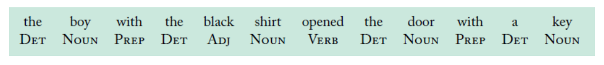
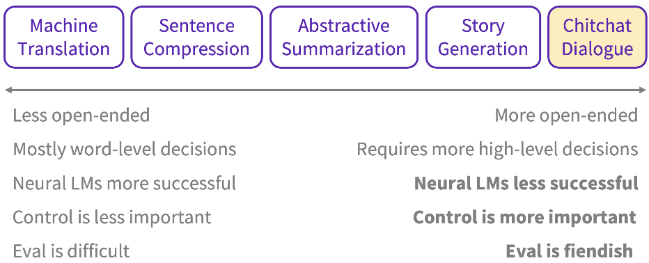

Language
The field of designing methods and algorithms that take as input or produce as output unstructured human language.
Some characteristics of natural language are
- discrete / symbolic
- compositional
- letters form words, words form phrases and sentences, sentences form documents
Vocabulary
Context = neighbouring words
Semantic = what this set of letters mean
Syntax = where does a word occur in a sentence, in relation to other words, related to grammar (conjugation, pluralise)
Vocabulary size = no. of unique words
Tokens = no. of words
Pivot word = current word
Context-dependent aspects of word meaning
Downstream task = supervised learning tasks that utilise a pre-trained model or component
Vocabulary size
Sequence length
Semantic questions:
- capital & country
- currency & country
- city & state
- man & woman
Syntax questions:
- adjective to adverb
- opposite >???
- comparative
- superlative
- present participle
- nationality adjective
- past tense
- plural nouns
- plural verbs
Concepts
Ideas
- Language modelling
- predict-the-next-word (vanilla)
- cloze task (masked language modelling)
- next-sentence prediction (next sentence prediction)
- ?? cloze task with permutations ?? (permutation language modelling)
- Modelling: architecture
- RNN
- Transformer
- Autoregressive (sequential)
- Decoder + encoder (autoencoder)
- Bidirection
- Sequence-to-sequence
- Modelling: components
- Self-attention
- Modelling: algorithms (?)
-
Teacher forcing

-
Tasks / applications
- Level 1
-
POS tagging

-
Constituency parsing
Break down a text into sub-phrases

-
Dependency parsing
Analyses the grammatical structure of a sentence, starting with the root. The word that has no dependency is called the root of the sentence. The verb is taken as the root of the sentence in most cases.

-
Semantic role labeling
Semantic role labelling assigns labels to words/phrases to indicate their semantic role in the sentence. Eg. "agent", "patient", "instrument", "manner".

-
Coreference resolution
Keep track of entities
-
- Level 2
-
Text classification
-
Sentiment analysis
Classify emotions (positive or negative)
-
NER
Identify named entities (eg. people, location, organisation, number, product)
-
Language modelling
-
Semantic similarity
-
Text generation
-
Topic modelling
-
Keyword extraction
-
Event extraction
-
Relation extraction
-
Information extraction
Extracting structured information from unstructured data. Over the years, this task has been broken down into NER, coreference resolution, entity linking, relation extraction, even extraction etc.
-
- Level 3
-
Summarisation
-
Machine translation
-
Open IE
Open Information Extraction. "Open" means any kind of relationships. This is in contrast to relation extraction where the relations do not need to be specified in advance.
Born in a small town, she took the midnight train going anywhere.- (born, she, in a small town)
- (took, she, the midnight train going anywhere)
- (going, the might train, anywhere)
-
Textual entailment
aka NLI (natural language inference)
Whether Sentence A (“premise”) can be implied or contradicted by Sentence B (“hypothesis”)
(SentenceA, SentenceB) → Entailment | Contradiction | Neutral
-
QA
AKA machine comprehension. QA answers natural language questions by selecting an answer span within an evidence text.
Types of machine comprehension
- Open-domain vs. closed-domain
- Abstractive vs. Extractive
- Factoid vs. Non-Factoid
-
VQA
Visual question answering
-
Image captioning
-
Chitchat dialogue
-
Paraphrasing
-

Data types
- Text
- Parallel corpus
- Documents
- Text with labels
Frameworks
-
fairseq
-
spacy.io
-
Neuralcoref
-
NLTK
-
gensim
-
TensorFlow
-
Universal Language Model Fine-tuning (ULMFiT) for trf learning
-
compromise.cool
-
ONNXT5 inference-ready
question: ... ? context: ...summarize: ...translate english to french: ...
Benchmarks
GLUE score (General Language Understanding Evaluation)
ROUGE (recall-oriented understudy for gisting evaluation)
SuperGLUE
XGLUE
Multimodal
- Text
- Tabular
- Vision